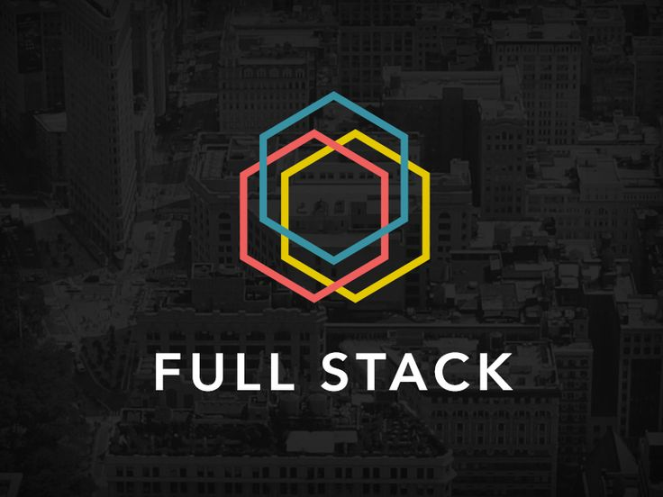

Skills

Java
Enterprise backend systems, Microservice Architecture, GIT.

Full Stack
React, Java, Spring Boot, PostgreSQL, Front-end Web Development, Dynamic Applications.
Databases
Relational systems, queries, efficient data modeling, optimized performance.